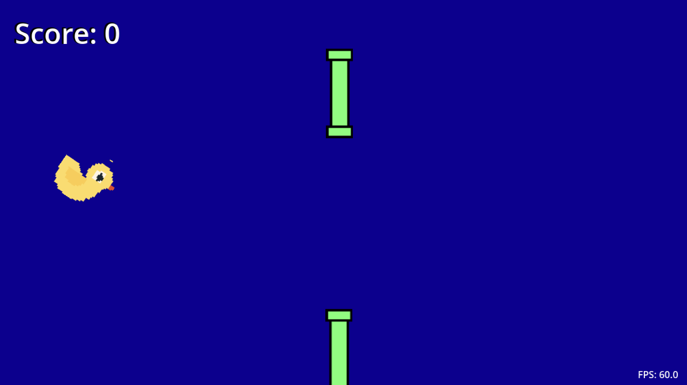

Description: This project was a statistics based assignment which I had during my AP CSP class that I took junior year of high school.
I chose that I wanted to create a program which would take prior information for the NFL season that year and run simulations in order to determine how likely it was that the Broncos would make the playoffs.
The simulations were weighted based on each team's win-loss record up to that point, and the result that I got matched the results of a professional site that I found. Date completed: Junior Year of High School (2023-2024) Skills used: Python
Project 2: Teleport Flappy Bird

Description: This was a personal project which I created as a part of starting to learn to use the Godot game engine.
I was able to create a working Flappy Bird style game where you teleport between the edges of the screen instead of the pipes moving past you. Date completed: Summer 2025 Skills used: Godot/GDScript, learning new skills
Project 3: Surrealist Collage
Description: This is a surrealist collage which I created for an assignment in one of my Digital Art classes which I took in my senior year of high school.
I created this image in photoshop by removing the background of and combining various different photos, and the result was a bipedal lizard with cat and octopus arms wearing glasses and a coat and sitting in a fancy chair with a wooden background. Date completed: Spring 2025 Skills used: Photoshop